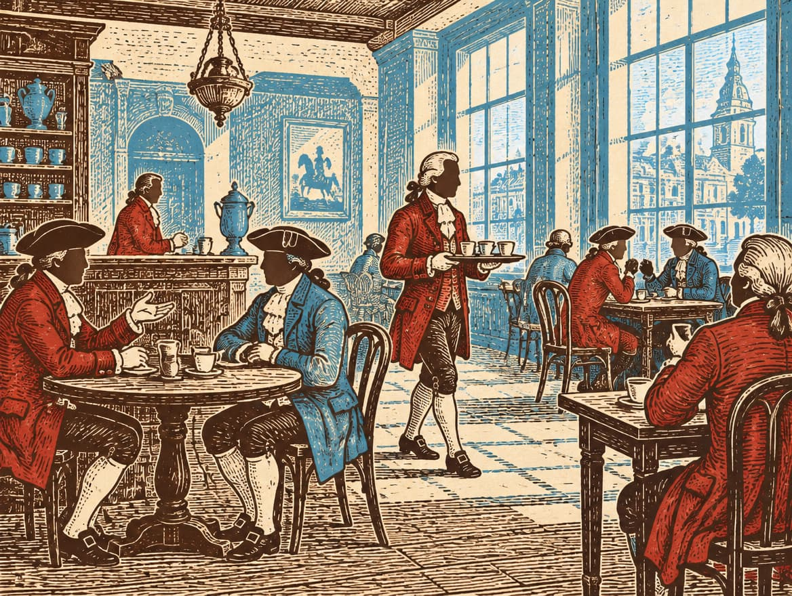
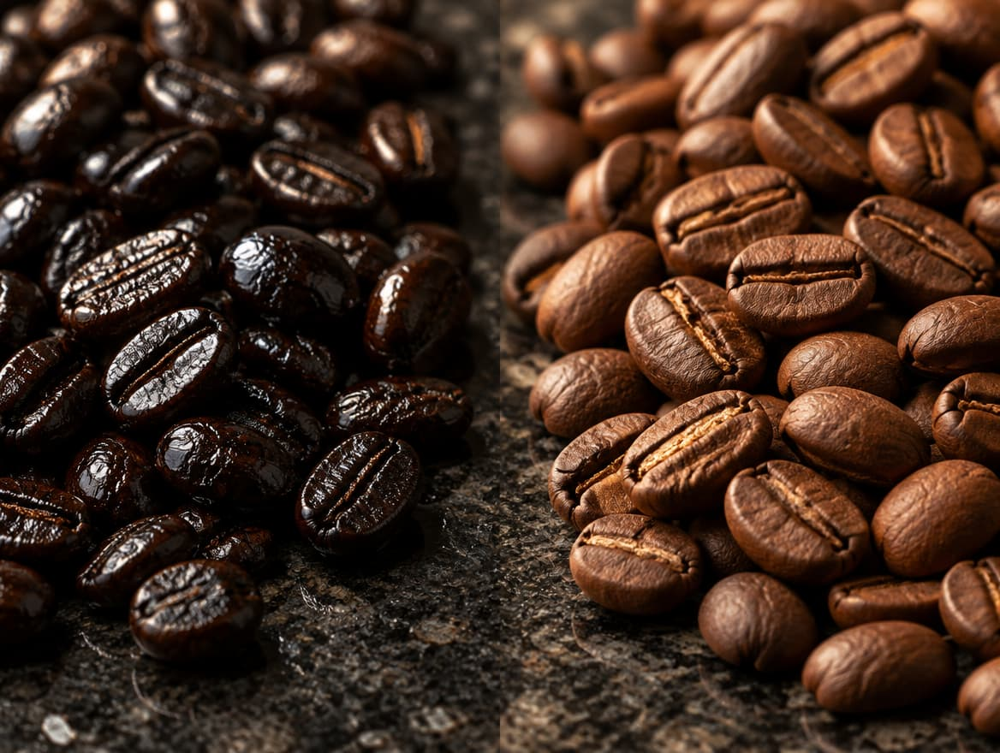
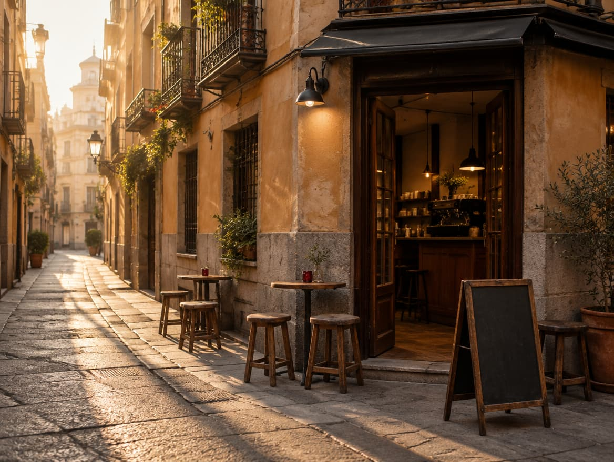

Ocho paradas entre 1765 y hoy
-
1765
El primer café de Madrid
Se considera que el primer café de Madrid abrió en 1765. Las fuentes no coinciden en el local exacto, pero sí en la fecha. Era lugar de tertulia, aunque el chocolate caliente seguía siendo la bebida favorita.

Ilustración generada por IA -
Siglo XIX
Café de ultramar
El café que se bebía en España llegaba de las colonias americanas.
-
1936–1939
La guerra y el torrefacto
La Guerra Civil mantuvo bajas las importaciones y el consumo. Con el café escaso, el torrefacto cobró fuerza: se añade azúcar al final del tueste, el grano se conserva más tiempo y los defectos quedan escondidos.
-
2011
Toma Café, calle de la Palma
Patricia Alda y Santiago Rigoni abren en Malasaña un local minúsculo que solo habla de café de especialidad. Entonces era puro exotismo.
-
~2014
La escena despega
Se duplican las cafeterías, se celebra el primer Campeonato Nacional de AeroPress y se anuncia el Festival Español del Café 2015.
-
2016
Un campeón español
Carlos Zavala gana el primer título nacional de AeroPress.
-
2020–2023
Después de la pandemia
La aceptación se acelera. En 2023 llega CoffeeFest Spain; su organizador lo asocia con un crecimiento muy rápido del interés.
-
2025
Un mercado que ya no es nicho
En abril de 2025 había 2.215 cafeterías de marca en España, cadenas incluidas. En Madrid, Chamberí es el barrio donde más han proliferado las de especialidad.
Torrefacto o especialidad: mira el grano

Torrefacto EspecialidadTorrefacto
Se añade azúcar al final del tueste. El grano queda negro y brillante, y el sabor, oscuro y amargo.
Especialidad
Tueste sin azúcar, pensado para que se note el origen.
En el súper
Muchas mezclas de supermercado aún llevan torrefacto.
Cifras de hoy
El 80% de los españoles encuestados toma café caliente a diario. (Fuente: Project Café España 2025, World Coffee Portal.)
Cifras de terceros. Las dos últimas son estimaciones de un tostador.
Madrid hoy: de Malasaña a Chamberí
- Malasaña vio nacer el primer Toma Café en 2011.
- Chamberí es hoy el barrio donde más cafeterías de especialidad han proliferado.
- El impulso empezó en Madrid y Barcelona. Ahora se nota también en Valencia, Andalucía y Galicia.
- Un dueño de cafetería madrileño duda de que la oferta crezca al ritmo de la demanda.

¿Y ahora qué?
- Más educación: el sector quiere normalizar el café de filtro, ideal para apreciar los cafés de especialidad.
- Más cadenas: McCafé (539 locales), Starbucks (181) y Santagloria (165) crecieron a doble dígito hasta abril de 2025.
- Más presión de precios: el café verde está caro y volátil, y los tostadores esperan que la taza suba.
Preguntas frecuentes
¿Cuándo abrió el primer café de Madrid?
Se considera que en 1765. Las fuentes no coinciden en el local exacto.
¿Qué es el torrefacto?
Café tostado con azúcar añadida al final. Se popularizó a principios del siglo XX, se extendió en la posguerra y aún aparece en muchas mezclas de supermercado.
¿Dónde empezó el café de especialidad en España?
Primero despegó en Madrid y Barcelona. Ahora se nota también en Valencia, Andalucía y Galicia.
¿Sigue creciendo?
Sí: tres años seguidos de crecimiento neto de locales de marca hasta abril de 2025. Aun así, algunos dueños dudan de que la demanda alcance a la oferta.